稳流过程 | Steady Flow Processes
控制体积
Control volume (open system) – A system that involves mass flow across their boundaries
稳流系统
Steady flow systems – control volume with steady mass flow

质量守恒 | Conservation of mass

min and mout -> mass flow rate
mcv -> control volume mass change rate
稳流过程：压缩和非压缩过程 | Steady flow process – Compressible / Incompressible Flows
对于稳流过程，有公式：
where v is velocity.

对于存在压缩的情况, 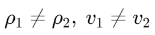
对于不存在压缩的情况, 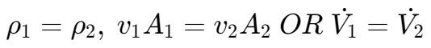
流体功 | Flow work
Work done by the flow push.
F = pA
Wflow = FL = pAL = pV
where p is pressure and V is volume.
流动流体的总能量 | The total energy of a flowing fluid

焓 | Enthalpy
用焓代入上面的公式，得到：

稳流系统 | Steady flow systems
In engineering devices, such as turbines, compressors, andnozzles operate for long periods of time under the sameconditions, once the transition start-up period is completed andsteady operation is established, they are classified as steady flow devices, which means the process is a steady flow process.
在一段时间内 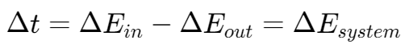
对于不存在能量存储的情况，Ein = Eout
所以，

管道与管道流动 | Pipe and duct flow
Ein - Eout = Esystem = 0
喷嘴和扩散器 | Nozzles and diffuser
A nozzle is a device that increases the velocity of a fluid at the expense of pressure.
A diffuser is a device that increases the pressure of a fluid by slowing it down.

节流阀 | Throttling valves
节流阀可以被看做是绝热的(adiabatic)因此节流阀中可以看做不存在焓变。
hin = hout
流体能 pv (pressure * volume) 增加
pinvin < poutvout
内能降低
uin > uout
混合室 | Mixing chambers
Mixing two streams of fluids.
热交换器 | Heat exchangers
压缩器 | Compressors
伯努利方程 | Bernoulli’s equation
In most flows of liquids, and of gases at low Mach number
v -> 单位体积 specific volume (m3/kg) 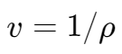;
V -> 速度 velocity (m/s)
例题
The electric heating systems used in a house consist of a simple duct with a resistance heater. Air is heated as it flows over resistance wires. Consider a 15 kW electric heating system. Air enters the heating section at 100 kPa and 17°C with a volume flow rate of 150 m3/min. If heat is lost from the air in the duct to the surroundings at a rate of 200 W,
determine the exit temperature of air. cp = 1.005 kJ/kg·°C at room temperature.

由公式流体的总能量 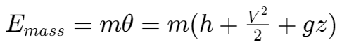，系统能量变化 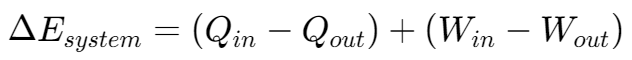，
对于本题，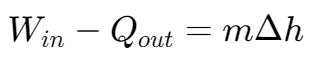
由于压强 p 和体积 v 不变，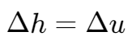，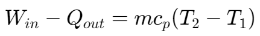
由公式  ，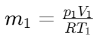。
，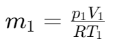。
则最终的温度 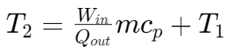